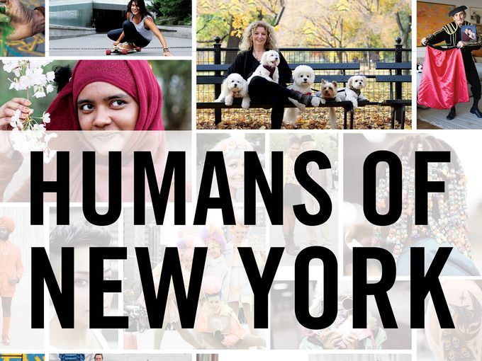

THE PROJECT
The Existing Opinions project was created by Mariajose Rodriguez, also known as Mj, from the University of Miami. The idea was influenced in everyday hourly conversations between MJ and her partner. All these discussions were on topics that affected Mj and her partner's lives and the lives of others as well such as Obesity, Social Media entitlement, Celebrities vs. Ordinary Citizen, etc. Studying Motion Pictures on the Production track for all four years, she always saw cameras as a way to get your voice into the world. Within these topics she noticed only the voices of known names in the public eye are publicized continuously, not any ordinary citizen. She wanted to publicize the voice of those citizens
Mj's inspiration came from a social media page on Instagram 'Humans of New York'. If you don't know them, Humans of New York is a photoblog on the people that live in New York City and their lives. Per post, they publicize a portrait of a person and below is a story of that person or what their daily life is. Each post is a different person. She loves this page because she felt as she was getting to know these people through writing. Furthermore, she always wished for them to start making videos of the New Yorkers to hear their voices. To check out their website click the picture below.

Since Mj's freshman year of college in New York city she wanted to create a project that was reality, required different filming and each session was completely different from the last. The Humans of New York page inspired her to create Existing Opinions, however, this is not about the lives of people because she thought she'd find it challenging to find people that would be comfortable talking about their life in front of a camera. Mj mixed it up and wanted to hear people's opinions on certain topics. She believes that it still shows who they are plus got them to talk about something important.

All the work that you see or will see on this page such as the website, updates, the filming of the videos, the editing of the episodes, etc. with the exception of the pictures, has been worked on only by Mariajose Rodriguez.